Despacho y Recepción MP
Tela, insumos de Etiquetado, devoluciones y recepción de mercancía comprada con trazabilidad en Odoo.
→Consumibles Tiendas / Taller
Despacho y recepción de suministros registrados en Sheets de Consumibles (sin Odoo).
→Requisición de Compra
Solicitud de tela y consumibles en Odoo Aprobaciones, con seguimiento de lead time.
→Mapa de procesos
Visión general de cómo se conectan los tres procesos principales del área.
Requisición de Compra
Supervisor identifica necesidad → Odoo Aprobaciones → Compras aprueba
Recepción
Compras informa llegada → QA revisa → Odoo / Sheets
Despacho
Área solicita → Picking → Entrega → Registro Odoo / Sheets
🎨 Leyenda de flujogramas
🔧 Sistemas y herramientas
Materia Prima e Insumos
Despacho y recepción de tela e insumos con trazabilidad física y en Odoo.
📋 Pasos — Despacho de Tela (Proceso 5.1)
Solicitud con OT en Odoo
El área solicitante pide tela y entrega trazos impresos de Audaces.
Producción / Diseño / Pedidos / CalidadCálculo de tela
Supervisor calcula cantidad necesaria según trazos recibidos.
SupervisorInforma al equipo
Envía información del cálculo a operadores de Materia Prima.
SupervisorPicking
Operadores preparan el pedido según indicación.
Operadores MPEntrega física
Se entrega la tela al área solicitante.
Operadores MPRegistro Sheets
Registro en Sheets de control (SKU, cantidad, área).
Operadores MPRegistro Odoo
OT + PC: TH/Existencia MP → Preproducción.
Supervisor📊 Flujograma
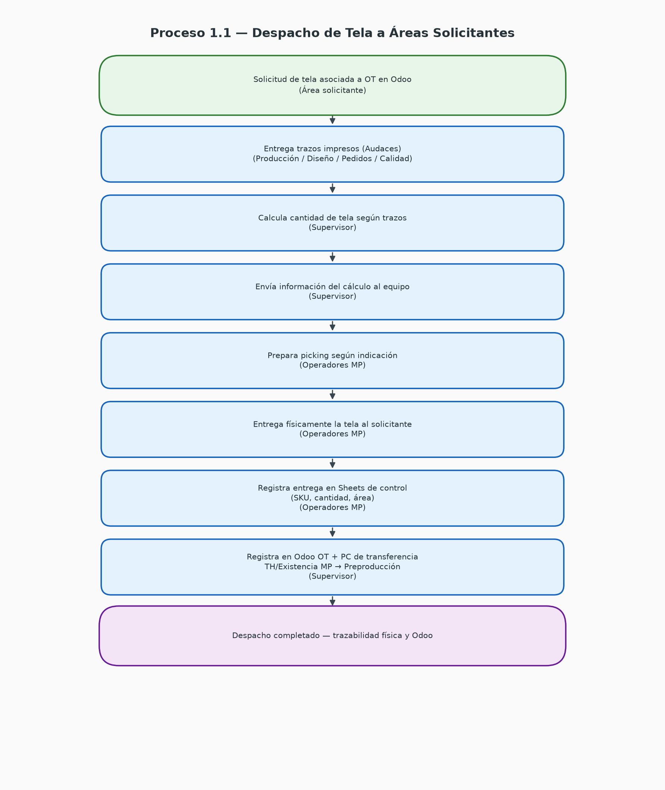
Proceso 1.1 — Despacho de Tela a Áreas Solicitantes
📋 Pasos — Despacho Insumos Etiquetado (Proceso 5.2)
Solicitud de insumos
Etiquetado solicita insumos distintos a tela.
EtiquetadoPicking
Operadores preparan insumos solicitados.
Operadores MPEntrega física
Entrega al área de Etiquetado.
Operadores MPRegistro Sheets
Registro en Sheets de control interno.
Operadores MPRegistro Odoo
Supervisor registra movimiento en Odoo.
Supervisor📊 Flujograma
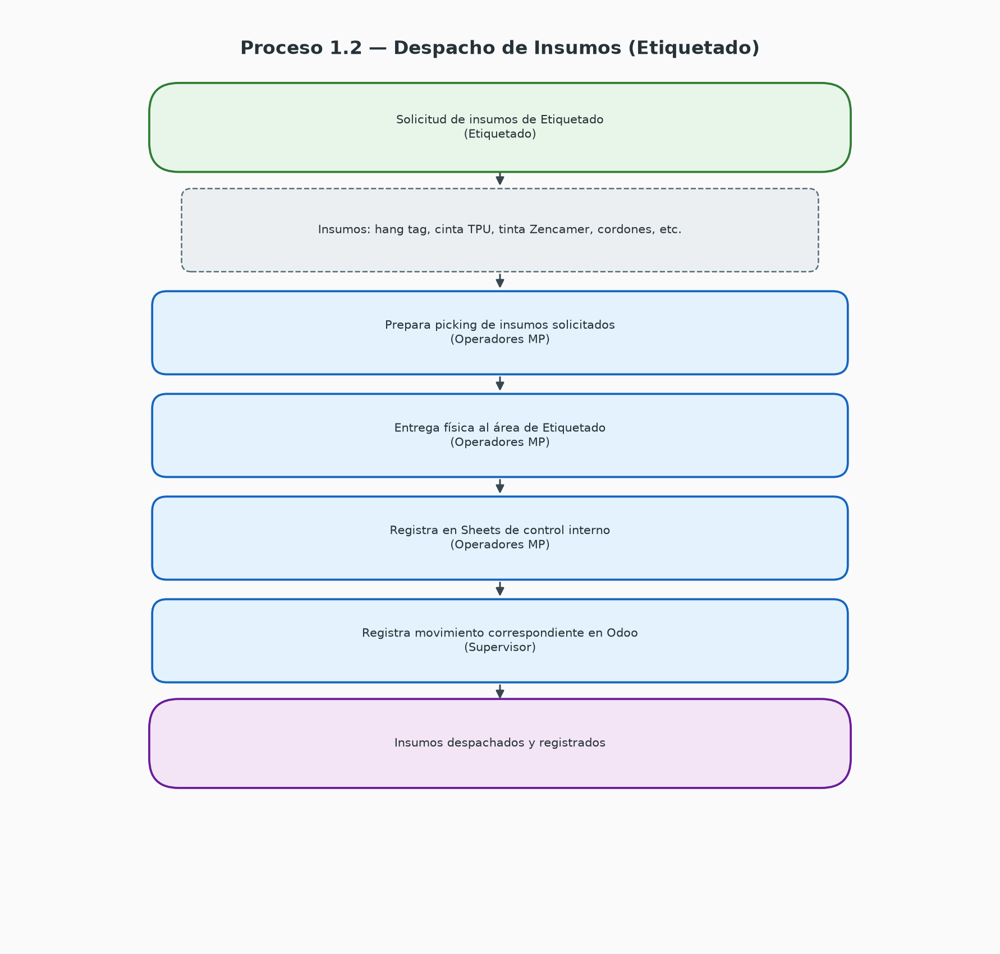
📋 Pasos — Devolución de Tela (Proceso 5.3)
Informe de rollos no usados
Producción informa rollos que ya no utilizará.
ProducciónRetiro y pesaje
Operadores retiran y pesan rollos devueltos.
Operadores MPActualizar hablador
Modifican hablador con nuevo peso.
Operadores MPUbicación en almacén
Ubican rollo en sección correspondiente.
Operadores MPRegistro Sheets
Registran devolución en Sheets de control.
Operadores MPRegistro Odoo
Supervisor registra movimiento de devolución.
Supervisor📊 Flujograma
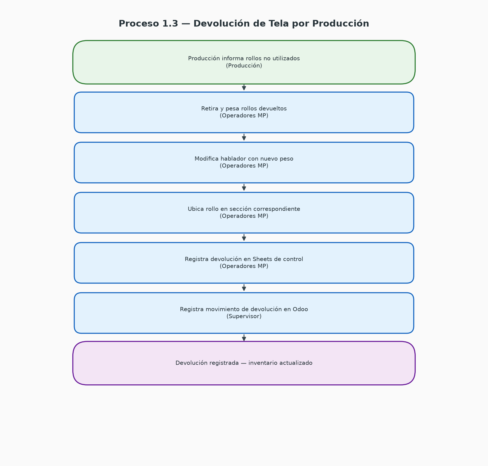
📋 Pasos — Recepción de Tela (Proceso 6.1)
Informe de llegada
Compras informa llegada y entrega detalle.
ComprasRevisión en plegadora
Operadores tienden rollo para verificar calidad.
Operadores MPQA valida rollo
Calidad acompaña revisión y anota variables. Aprueba o rechaza.
Operadores + QAPesaje e identificación
Pesan, identifican con hablador y ubican (aprobados por tipo / rechazados en área de rechazo).
Operadores MPHoja de soporte
Registran todos los rollos en hoja de soporte de recepción.
Operadores MPTraslado Odoo (aprobados)
TH/Por Auditar Tela → Materia Prima con kg/m validados.
SupervisorRechazados / Diferencias
Rechazados: notificar Compras (sin transferencia Odoo). Diferencias: informar para ajuste.
Supervisor📊 Flujogramas
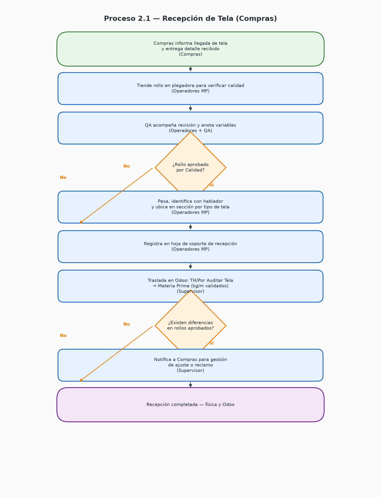
Flujo principal — recepción con decisión QA
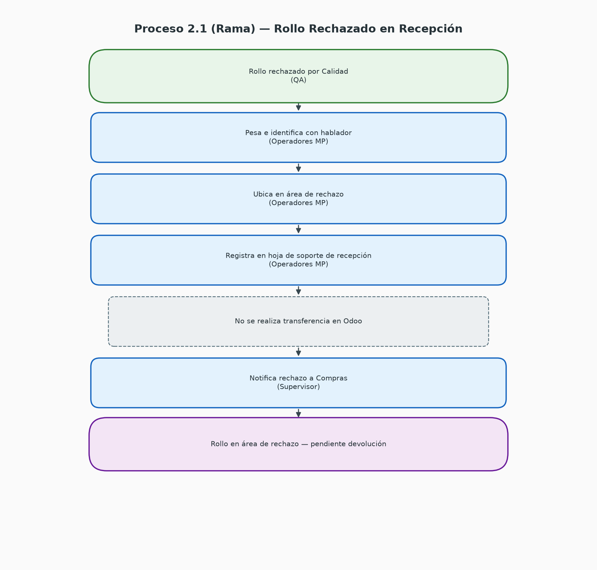
Rama — rollo rechazado por Calidad
📋 Pasos — Rechazados y Devolución al Proveedor (Proceso 6.2)
Reclamo al proveedor
Compras gestiona reclamo correspondiente.
ComprasApto para devolución
Compras informa que rollos están listos para devolver.
ComprasPreparación de rollos
Embobinan y protegen rollos como originalmente.
Operadores MPListos para retiro
Informan a Compras que rollos están listos.
Supervisor / Operadores📊 Flujograma
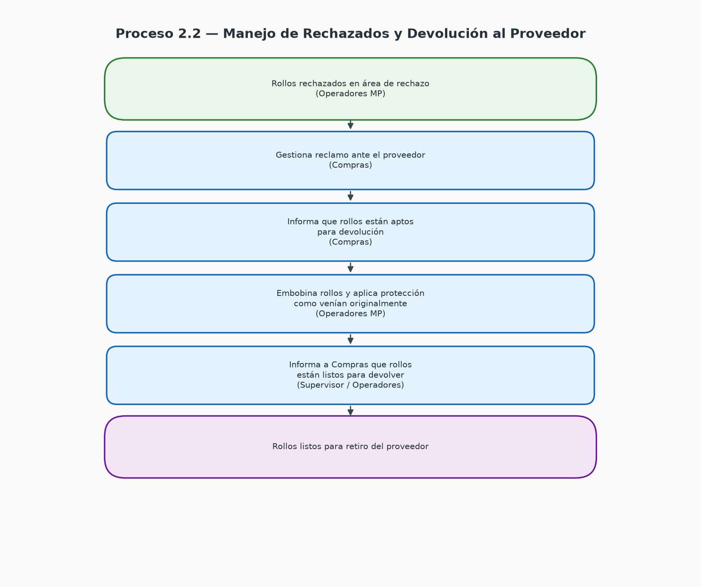
📋 Pasos — Recepción de Insumos no Tela (Proceso 6.3)
Detalle de insumos
Compras entrega detalle de insumos recibidos.
ComprasConteo
Operadores contabilizan insumos recibidos.
Operadores MPReporte al Supervisor
Pasan detalle al Supervisor.
Operadores MPTraslado Odoo
Supervisor realiza traslado — inventario teórico disponible.
Supervisor📊 Flujograma
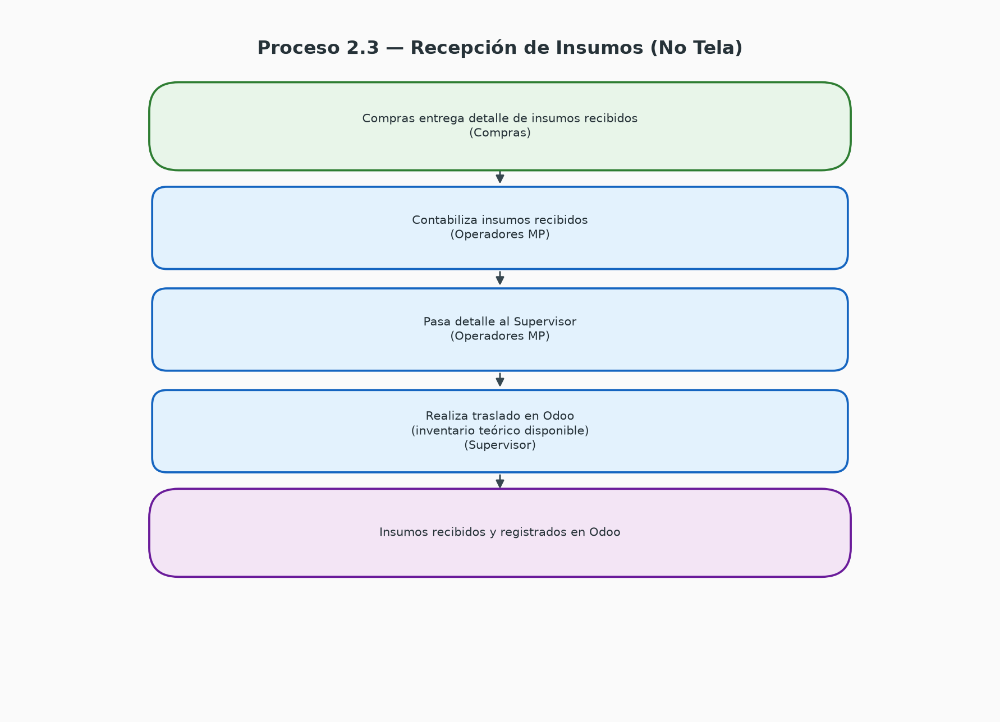
Consumibles — Tiendas y Taller
Despacho y recepción registrados en Sheets de Consumibles (sin Odoo).
📋 Pasos — Despacho Consumibles (Proceso 8.1)
Solicitud en Sheets
Tienda o Taller registra requerimiento en Sheets de solicitudes.
Tienda / TallerRevisión de solicitudes
Operador revisa Sheets de Tiendas y Taller.
Operador ConsumiblesImpresión y picking
Imprime solicitud y realiza picking.
Operador ConsumiblesEntrega según destino
Tiendas: prepara cajas para envío. Taller: entrega directa interna.
Operador ConsumiblesRegistro descuento
Registra movimiento en Sheets de control de inventario.
Operador Consumibles📊 Flujograma
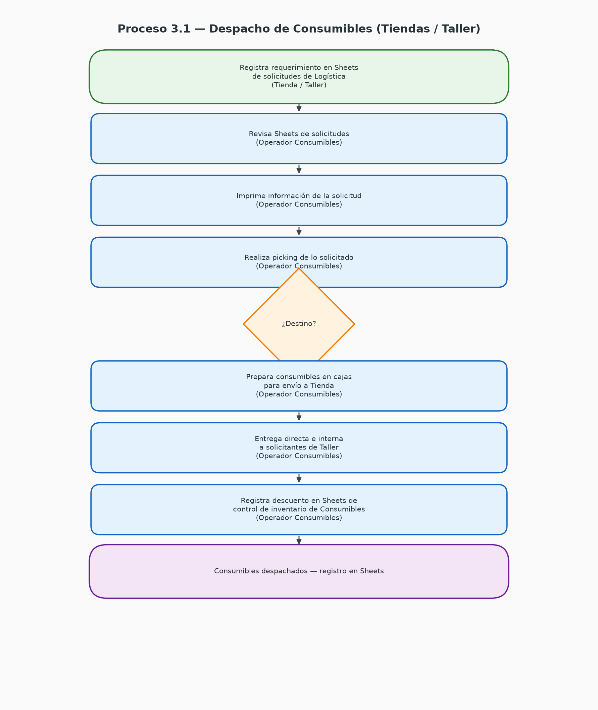
📋 Pasos — Recepción Consumibles (Proceso 8.2)
Informe de llegada
Compras informa llegada y entrega detalle.
ComprasRecepción y conteo
Recibe, contabiliza y chequea lo recibido.
Operador ConsumiblesUbicación
Ubica consumibles en zona de almacén.
Operador ConsumiblesInforme y registro
Informa al Supervisor y registra en Sheets.
Operador ConsumiblesDiferencias
Si hay diferencias, Supervisor informa a Compras.
Supervisor📊 Flujograma
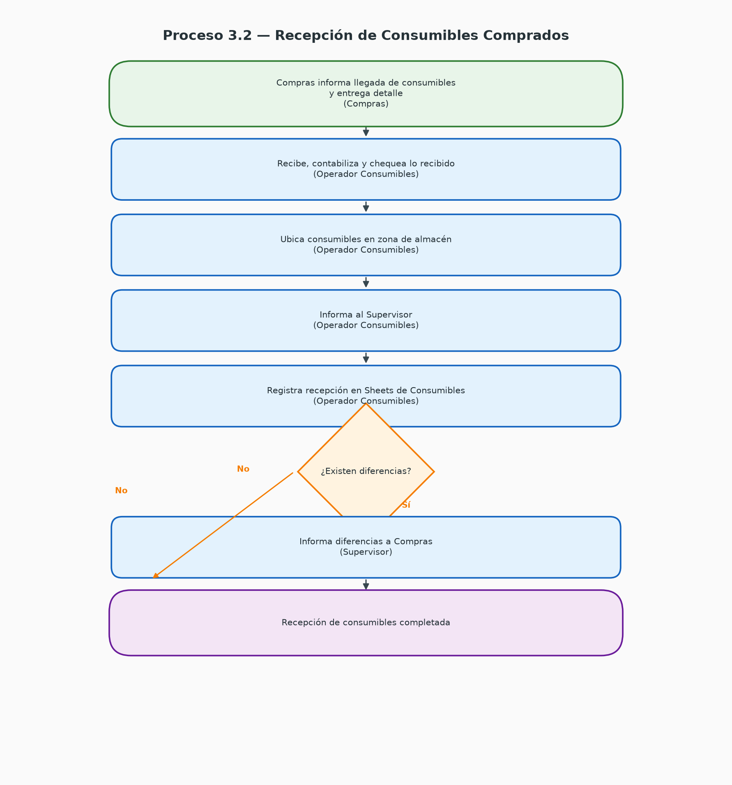
Requisición de Compra
Solicitud de tela y consumibles en Odoo — módulo de Aprobaciones.
📋 Pasos — Solicitud de Requisición
Identificar necesidad
Supervisor detecta necesidad de tela o consumibles.
SupervisorOdoo Aprobaciones
Ingresa al módulo de Aprobaciones en Odoo.
SupervisorSKU y cantidad
Ingresa SKU (o descripción si no existe) y cantidad requerida.
SupervisorJustificación
Adjunta justificación respaldada en datos y envía la orden.
SupervisorRevisión Compras
Compras revisa, aprueba o solicita información adicional.
ComprasAprobación y compra
Compras aprueba y gestiona compra según lead time.
ComprasSeguimiento lead time
Supervisor da seguimiento al tiempo de entrega.
Supervisor📊 Flujogramas
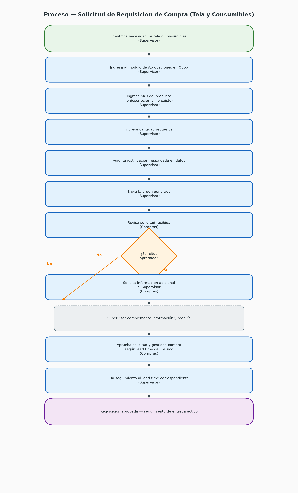
Flujo principal — requisición de compra
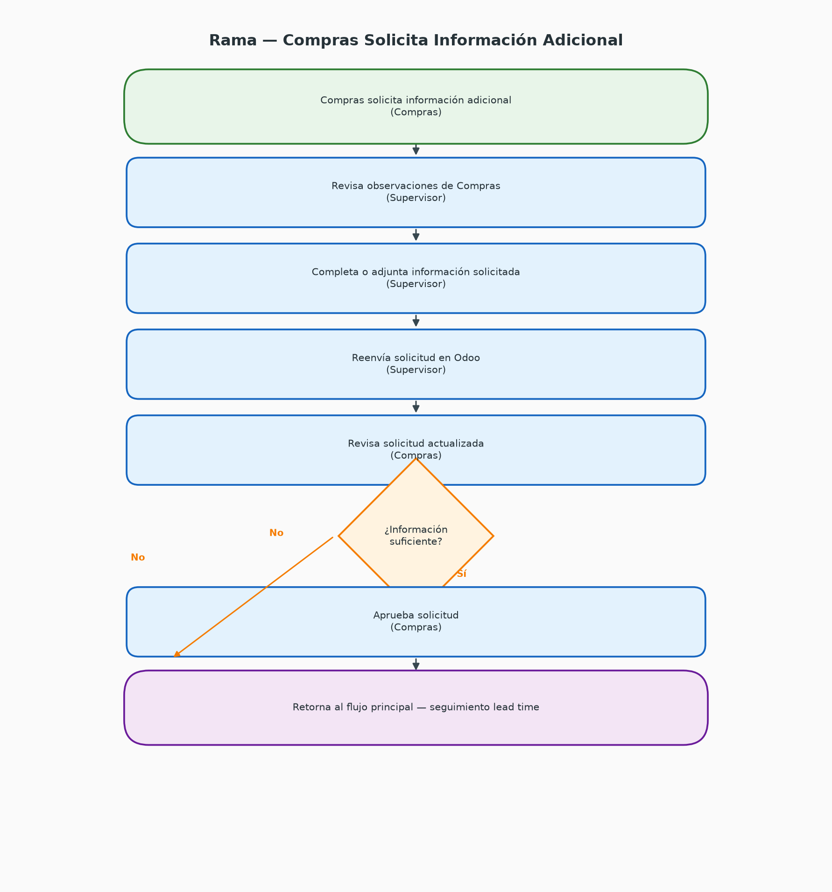
Rama — Compras solicita información adicional
Roles y Responsabilidades
Quién hace qué en cada proceso del área de Logística e Inventarios.
Supervisor de Logística e Inventarios
- Calcula tela según trazos Audaces
- Registra OT, PC y traslados en Odoo
- Notifica diferencias y rechazos a Compras
- Genera requisiciones de compra en Odoo
- Da seguimiento al lead time
Operadores de Materia Prima
- Preparan picking y entregan pedidos
- Registran en Sheets de control interno
- Reciben, pesan e identifican rollos
- Ubican en almacén con habladores
Operador de Calidad (QA)
- Acompaña revisión en plegadora
- Valida aprobación o rechazo de rollos
Operador de Consumibles
- Revisa Sheets de Tiendas y Taller
- Picking, empaque y entrega de consumibles
- Registra movimientos en Sheets
- Recibe consumibles comprados
Compras
- Informa llegada de mercancía
- Revisa y aprueba requisiciones en Odoo
- Gestiona reclamos y devoluciones
- Solicita ajustes por diferencias
Producción / Diseño / Pedidos / Calidad / Etiquetado
- Solicitan tela o insumos vinculados a OT
- Entregan trazos de Audaces
- Informan devoluciones de rollos
Tiendas / Taller
- Registran requerimientos en Sheets de solicitudes
- Reciben consumibles despachados
Registros y Soportes
Dónde y cuándo se registra cada movimiento del proceso.
| Registro | Responsable | Dónde y cuándo |
|---|---|---|
| Entrega picking (tela/insumos) | Operadores | Sheets de control interno — al momento de la entrega |
| Salida a Preproducción | Supervisor | Odoo — Orden de Trabajo y PC de transferencia |
| Devolución de tela | Operadores | Sheets de control interno — al pesar el rollo devuelto |
| Movimiento de devolución | Supervisor | Odoo — tras el registro físico |
| Recepción de rollos | Operadores + QA | Hoja de soporte de recepción — durante revisión en plegadora |
| Traslado tela aprobada | Supervisor | Odoo — TH/Por Auditar Tela → Materia Prima |
| Notificación rechazo/diferencias | Supervisor | Comunicación directa a Compras |
| Recepción insumos (no tela) | Operadores | Conteo físico y reporte al Supervisor |
| Traslado insumos (no tela) | Supervisor | Odoo |
| Entrega consumibles | Operador Consumibles | Sheets de control de inventario — al entregar |
| Recepción consumibles | Operador Consumibles | Sheets de Consumibles — al recibir y ubicar |
| Requisición de compra | Supervisor | Odoo — módulo de Aprobaciones |
📊 Vista general — Flujograma completo
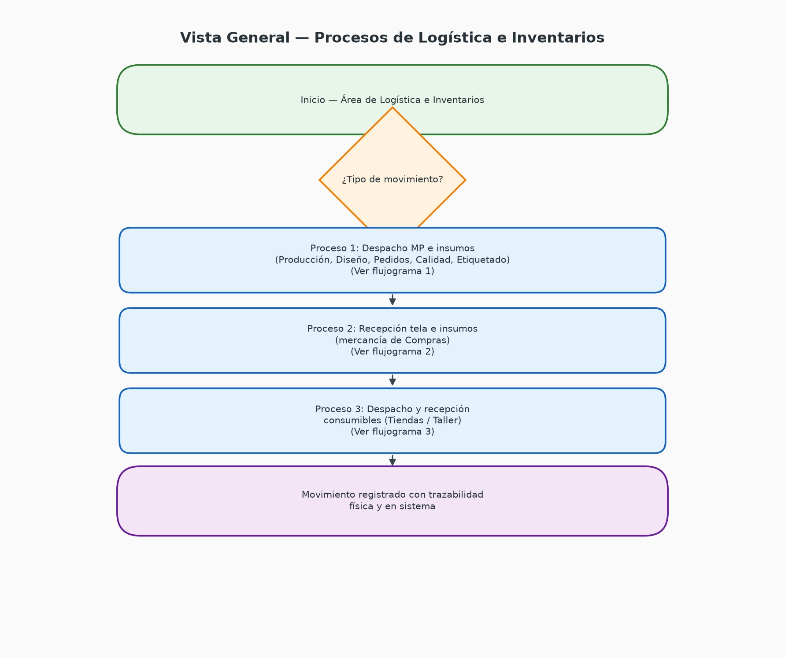